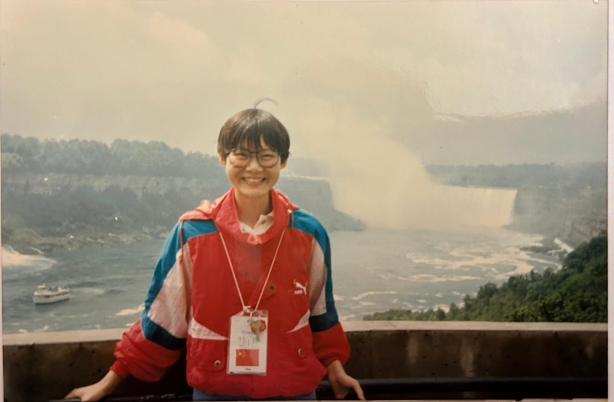
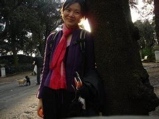
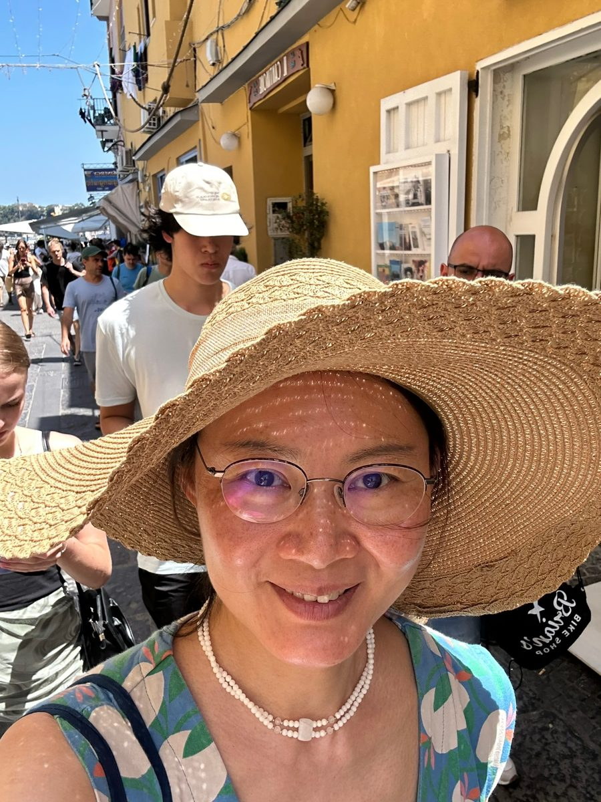

§1.About
I am a mathematician working on higher structures in differential geometry: how Lie algebroids, Lie groupoids, differentiable stacks and their higher analogues organise the symmetries of geometric objects, and what they tell us about (shifted) Poisson and (shifted) symplectic geometry and mathematical physics.
I have been at the University of Göttingen since 2008, first as Junior Professor and, since 2013, as a tenured professor. In 2025 I was the inaugural holder of the CRM–María de Maeztu Chair of Excellence at the Centre de Recerca Matemàtica in Barcelona.
Before Göttingen, I was a maître de conférences at the Institut Fourier in Grenoble, a postdoc with Giovanni Felder at ETH Zürich, a PhD student with Alan Weinstein at UC Berkeley, and an undergraduate at Peking University. Before that, I was engaged in mathematical competitions: I won a gold medal with a perfect score at the 1995 International Mathematical Olympiad.



§2.CV and publications
§3.Research interests
- Higher structures in differential geometry: higher/derived groupoids, algebroids/d.g. manifolds, shifted symplectic structures, differentiable stacks and gerbes.
- Poisson and symplectic geometry, mathematical physics.
Selected papers
- 2026Duals of higher vector spaces
- 2026Differentiating L∞ groupoids
- 2024Generalized symmetries in singularity-free nonlinear σ models and their disordered phases
- 2023Shifted symplectic higher Lie groupoids and classifying spaces
- 2021The controlling L∞-algebra, cohomology and homotopy of embedding tensors and Lie–Leibniz triples
- 2020On the homotopy theory for Lie ∞-groupoids, with an application to integrating L∞-algebras
- 2017Higher extensions of Lie algebroids
- 2006Lie II theorem for Lie algebroids via higher groupoids
§4.Seminars
§5.Students
PhD students
- currentMilena Weiershausen
Graduated
- PhDKalin Krishna
- PhDFlorian Dorsch
- 2025Stefano Ronchi
- 2025Hao Xu
- 2020Malte Dehling
- 2014Du Li
Selected Master and Bachelor theses
- Abel MilorAbout extending the Chern–Weil classification to the simplicial principal bundles
- Florian DorschLie 2-groups and symplectic Lie n-groupoids
- Milena WeiershausenAn embedding tensor and corresponding Lie 2-algebra for the exceptional Lie group E7
- Daniel MissalA TQFT-inspired explicit construction of higher groups
§6.Academic activities
- 2026Poisson 2026, August, Antwerp and Leuven
- 2025CRM–MdM Chair of Excellence · Interview · Colloquium
- 2025A Summer Tapas Invitation to Higher Structures in Symplectic and Poisson Geometry, July 7, UPC Barcelona
- 2024Poisson 2024, July 8–12, Napoli
- 2023Gone Fishing 2023, March 16–19, Amherst
- 2022Co-organiser, Higher Structures and Field Theory, August 2022, ESI Vienna
- 2022Co-organiser, Poisson 2022, July 2022, Barcelona–Madrid
- 2022Mini-course on higher symplectic groupoids,
online at HMI
- EventsComplete list of higher structure events that I (co-)organised
§7.Academic and non-academic service
- I am Gleichstellungsbeauftragte (equal opportunities officer) of the Mathematical Institute. We have an active women-in-math circle, WiMgo! (Women in Math Göttingen).
- I organise a course followed by participation in the IMC (International Mathematics Competition for University Students). Our team ranked no. 6 worldwide in 2016; later Christian Bernert won a Grand First Prize (top 0.5%). In 2023, Male Hesse obtained a Grand First Prize as the only top female participant.
§8.Contact
| chenchang.zhu@mathematik.uni-goettingen.de | |
| Phone | +49 551 39 27799 |
| Fax | +49 551 39 22985 |
| Address | Mathematisches Institut, Georg-August-Universität Göttingen Bunsenstraße 3–5, 37073 Göttingen, Germany |